Навигация
Автоматизированная система моделирования вычислительной машины Тьюринга разработана для эмуляции работы машины Тьюринга.
С помощью этой системы пользователь может понять принцип работы машины Тьюринга, составлять собственные алгоритмы
и выполнять их на разных исходных данных в различных режимах.
Приложение является настольным и не требует наличия интернет-соединения.
Требования к системе:
1) тип операционной системы – Windows 7 и выше;
2) объём оперативной памяти – 2 Гб;
3) объём свободного пространства на жёстком диске – 20 Гб;
4) браузер – Google Chrome 118.0.5993.54.
Система реализует следующие функции:
- контроль добавления и удаления состояний алгоритма;
- загрузка базовых алгоритмов;
- контроль синтаксической корректности ввода команды пользователем;
- перевод операндов из числового представления в символьное;
- выполнение алгоритма с семантической проверкой;
- визуализация текущего состояния ленты;
- визуализация текущей команды;
- создание трассы;
- выдача справочной информации.
Функции пользователя
При запуске программы появится окно, представленное на рисунке ниже.
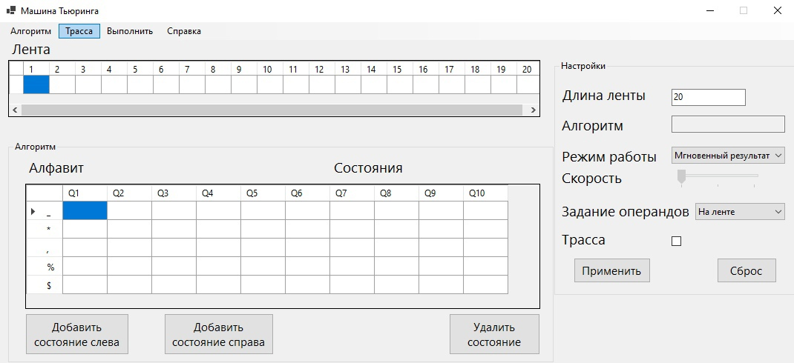
Функция выбора базового алгоритма
Перед началом работы стоит посмотреть, как работают вшитые в систему алгоритмы.
В данной программе таких алгоритмов два: алгоритм сложения и алгоритм наибольшего общего делителя (НОД).
Пользователь может найти их, нажав кнопку "Алгоритм" и в выпадающем меню выбрав один из предложенных.
Если файл алгоритма будет повреждён, будет выведено сообщение об ошибке.
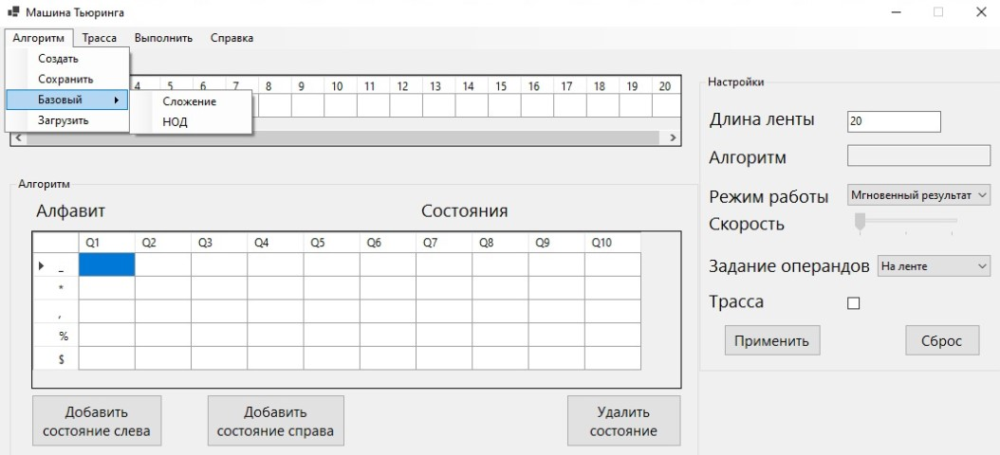
При выборе алгоритма справа в блоке "Настройки" появится имя выбранного алгоритма.
Функция задания длины ленты
Далее необходимо задать длину ленты. Для этого в блоке Настроек
необходимо изменить длину ленты. Минимальная длина ленты равна 20, а максимальная – 500 символам.
При попытке создания ленты длиной больше 500 будет выведено сообщение об ошибке.
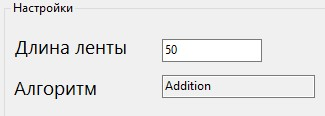
Функция запуска машины Тьюринга на выполнение
Для запуска машины Тьюринга на выполнение необходимо её настроить.
В блоке Настроек из выпадающего меню нужно выбрать режим работы.
Всего режимов работы 3: мгновенный вывод результирующей ленты, пошаговый, и автоматической с настройкой скорости.
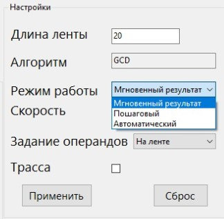
При выборе пошагового режима под лентой появится кнопка Шаг.
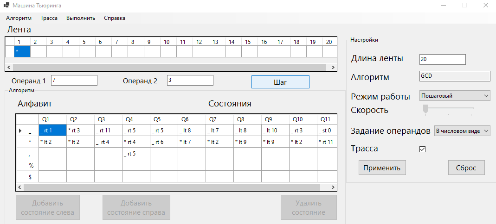
В случае выбора последнего режима необходимо также задать скорость.
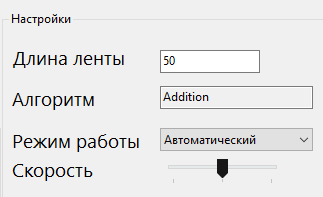
Также в блоке настроек можно выбрать способ задания операндов (на ленте, либо в числовом виде).
Разделителем для операндов служит символ запятой ','. Если какой-либо из операндов будет отсутствовать, будет выведено сообщение об ошибке.
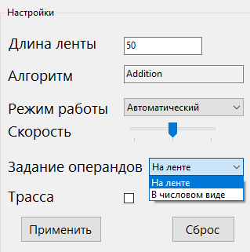
После этого под лентой появятся поля для ввода операндов в числовом виде.
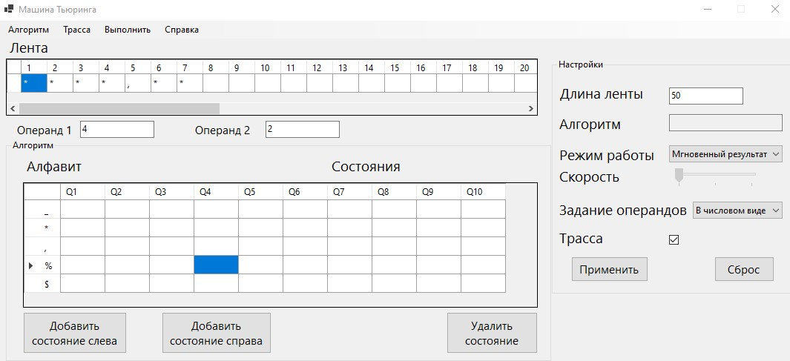
Итак, до запуска машины Тьюринга на выполнение необходимо её настроить:
1) выбрать способ задания операндов;
2) выбрать алгоритм;
3) выбрать режим работы;
4) настроить скорость, если выбран автоматический режим.
Для сохранения настроек необходимо нажать на кнопку Применить в блоке настроек.
Для запуска машины Тьюринга на выполнение необходимо нажать на кнопку Выполнить в меню.
В случае выбора пошагового режима после нажатия кнопки Выполнить необходимо нажимать на кнопку Шаг для визуализации работы машины Тьюринга.
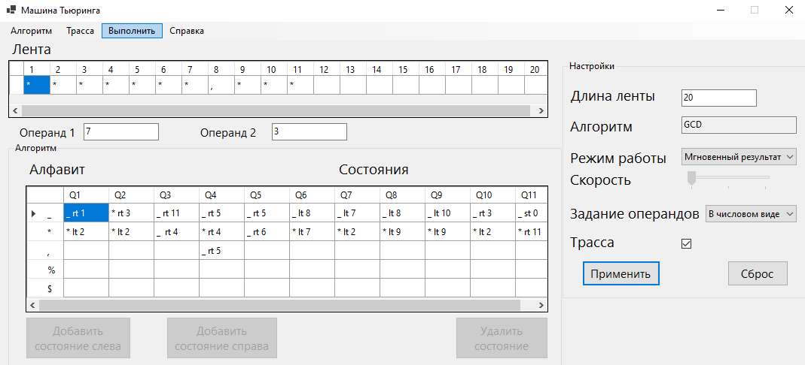
Функция составления алгоритма
Для составления аогоритма необходимо в главном меню выбрать Алгоритм и нажать на кнопку Создать.
В таблице для ввода алгоритма слева представлены символы алфавита: '_', '*', ',', '%', '$'.
'_' – это символ, используемый для затирания (наглядное представление пробела),
'*' используется для представления единичного числа (* – это 1, *** – 3 и т. д.),
',' – это разделитель между двумя операндами.
Символы '%' и '$' могут быть
использованы для составления сложных алгоритмов по усмотрению пользователя.
"Q1" - "Q10" – это состояния машины Тьюринга, в которые может быть осуществлён переход.
Максимальное количество состояний – 20.
Чтобы добавить состояние, необходимо выбрать одну из ячеек столбца
и нажать на кнопку Добавить состояние справа или Добавить состояние слева.
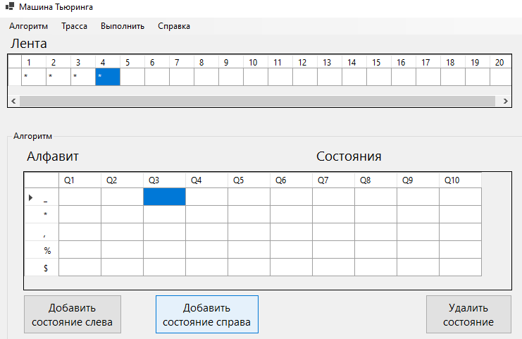
Для удаления состояния надо выбрать одну из ячеек столбца, который надо удалить, и нажать на кнопку Удалить состояние.
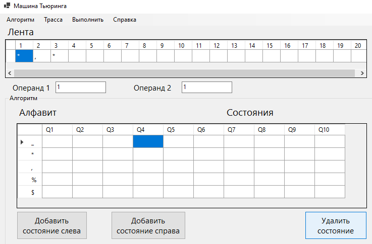
Базовые алгоритмы не редактируются.
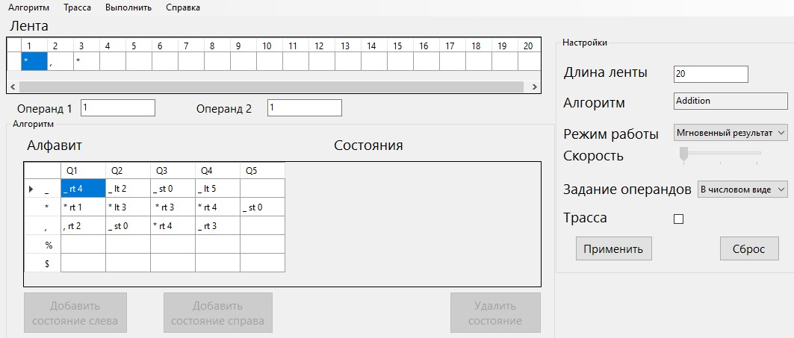
Каждая ячейка может быть оставлена пустой, либо должна содержать команду.
Команда имеет 3 составляющие:
1) символ, на который должен быть заменён символ на ленте при встрече символа из алфавита;
2) сдвиг головки (rt – сдвиг вправо, lt – сдвиг влево, st – остаться на месте);
3) состояние, в которое необходимо перейти дальше.
При достижении конца алгоритма необходимо перейти в нулевое состояние.
Например, команда "* rt 1" рядом с '*' говорит о том, что при встрече символа '*' на ленте необходимо оставить его неизменным,
сдвинуться по ленте к следующему символу (вправо) и перейти в состояние 1 (то есть остаться в текущем состоянии).
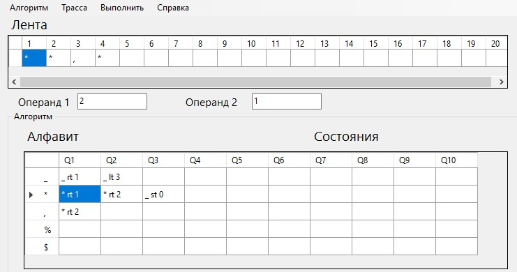
Команда "* rt 2" рядом с ',' говорит о том, что при встрече символа ',' на ленте необходимо заменить его на '*',
сдвинуться по ленте к следующему символу (вправо) и перейти в состояние 2.
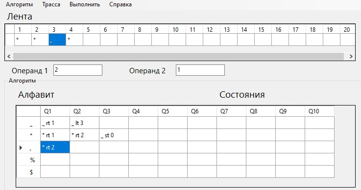
Команда "_ st 0" рядом с '*' говорит о том, что при встрече символа '*' на ленте необходимо заменить его на '_',
не сдвигаться по ленте и перейти в конечное состояние (Q0), говорящем о завершении работы алгоритма.
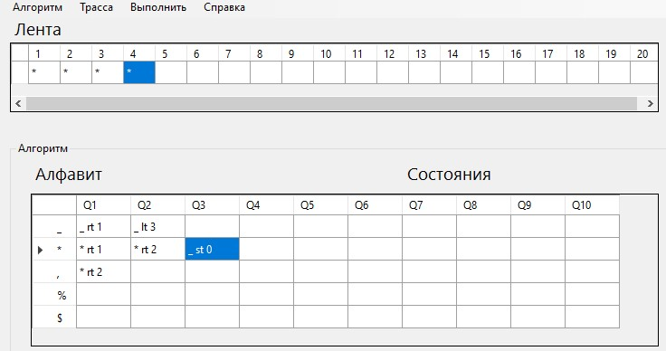
Функция сохранения алгоритма в файл
Пользовательский алгоритм может быть сохранён в файл.
Для этого необходимо перейти в меню, нажать на кнопку Алгоритм, в выпадающем меню нажать на кнопку Сохранить, а далее ввести название файла.
Сохранённый файл будет иметь расширение .alg и будет располагаться в папке с другими алгоритмами.
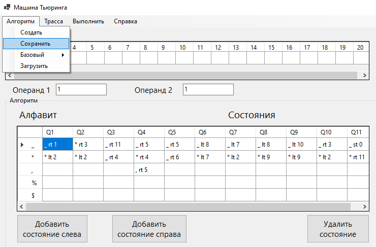
Функция загрузки алгоритма из файла
Пользовательский алгоритм может быть загружен из файла.
Для этого необходимо перейти в меню, нажать на кнопку Алгоритм, в выпадающем меню нажать на кнопку Загрузить, и далее выбрать необходимый файл.
Загруженный алгоритм будет отображен в таблице.
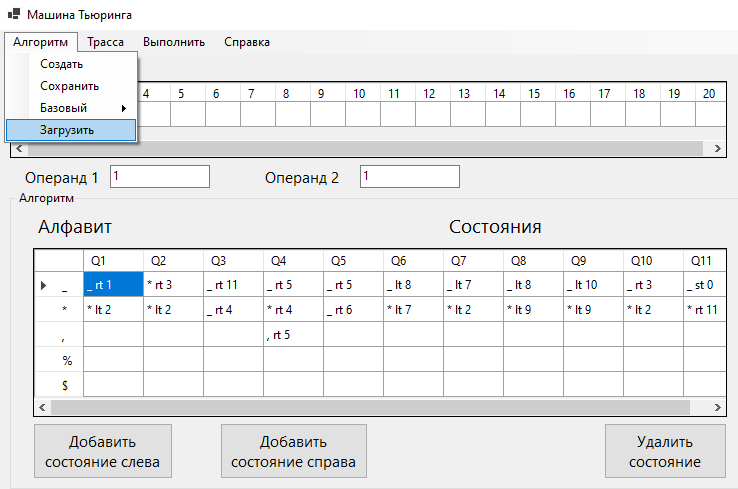
Функция просмотра трассировочной таблицы
Для формирования трассы необходимо поставить галочку напротив Трассы в блоке настроек.
Трасса представляет собой множество мгновенных снимков ленты и нужна для проверки и визуализации работы алгоритма.
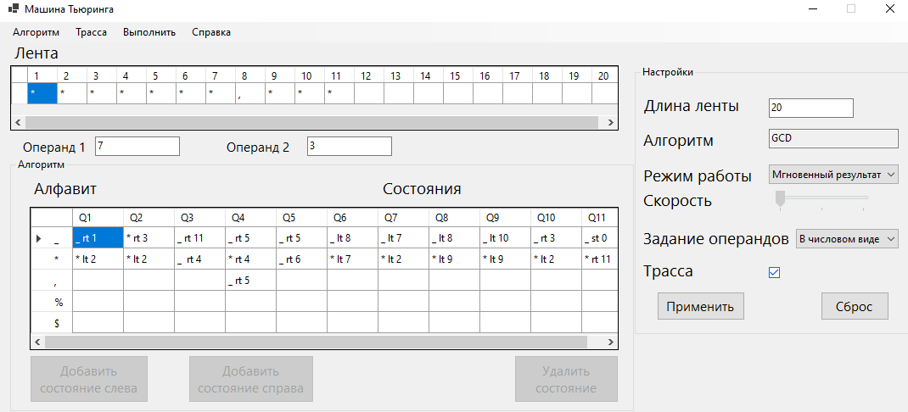
В случае выбора режима мгновенного результата трасса будет отображена сразу же после нажатия кнопки выполнить.
В пошаговом и автоматическом режиме трасса будет отображена после завершения визуализации работы программы.
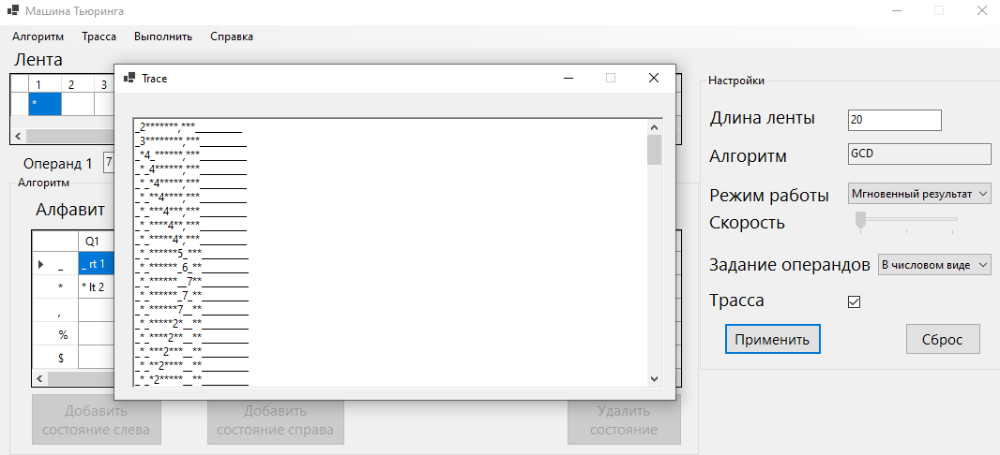
На рисунке выше запись _2*******,***__________ (первая строка) значит, что первый символ был заменён на '_' (пробел/пустая ячейка),
а число 2 перед * говорит о том, что следующим считываемым символом будет * и был совершен переход во 2-ое состояние.
Функция сохранения трассировочной таблицы в файл
Для сохранения трассы в файл необходимо нажать на кнопку Трасса в меню, после чего необходимо дать файлу наименование.
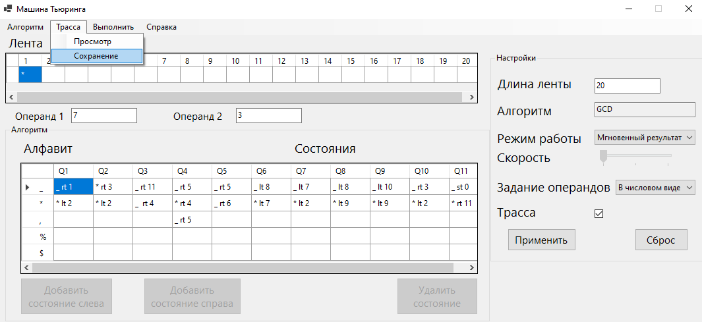
Функция просмотра справочной информации
Для просмотра справочной информации необходимо нажать на кнопку Справка в меню,
после чего необходимо выбрать пункт "О разработчиках".
Выбор пункта "О системе" приведёт к открытию данной веб-страницы в браузере.
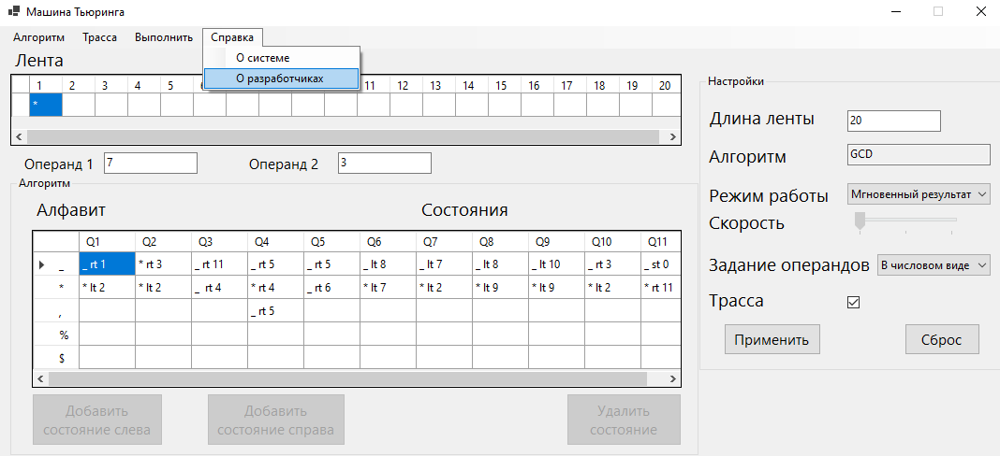
Выход
Закрытие основной формы завершает работу программы и закрывает её.
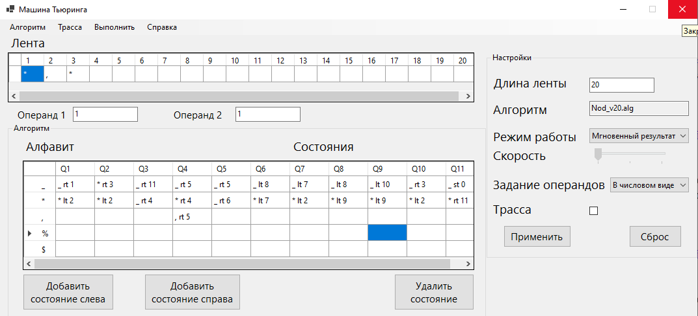